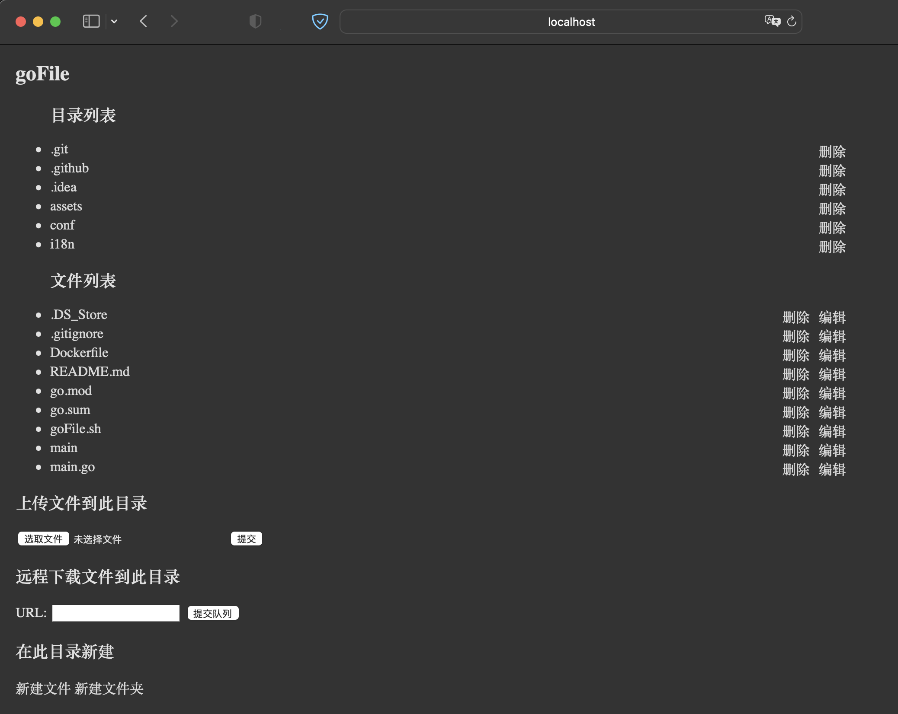

尝试使用Caddy代替Nginx服务时，发现光使用SSH，不使用SCP、SFTP工具时，管理文件很是麻烦，也不想去装宝塔，索性就自己写了个简陋的在线文件管理器
预览

介绍
使用Golang作为开发语言，并在Github开源 传送门
目前实现了的功能：
- 后台远程下载
- 上传文件&拖放上传
- 删除文件&文件夹
- 新建文件&文件夹
- 解压ZIP、gz压缩包
- 在线编辑文件
安装
环境支持
- Linux支持
- MacOS支持
不支持Windows（Windows再用这个就显得有点鸡肋了，虽然说支持MacOS也有点鸡肋
脚本安装
bash <(curl -s https://raw.githubusercontent.com/csznet/goFile/main/goFile.sh)
手动安装
Releases
可以前往Github下载编译好了的Releases 传送门
自己编译
也可以选择下载源码自己编译 传送门
使用
如果是使用脚本安装，则在需要管理的目录运行goFile即可打开goFile服务管理当前目录下的文件&目录
如果是下载二进制文件使用，则需要把二进制文件放置在需要管理的目录下或者带上path参数
参数
支持自定义管理目录和运行的WEB端口
-path
默认管理目录为调用服务的目录
-port
默认端口为8089
ex：
./goFile -path /root -port 80
表示在/root目录使用80端口运行goFile服务